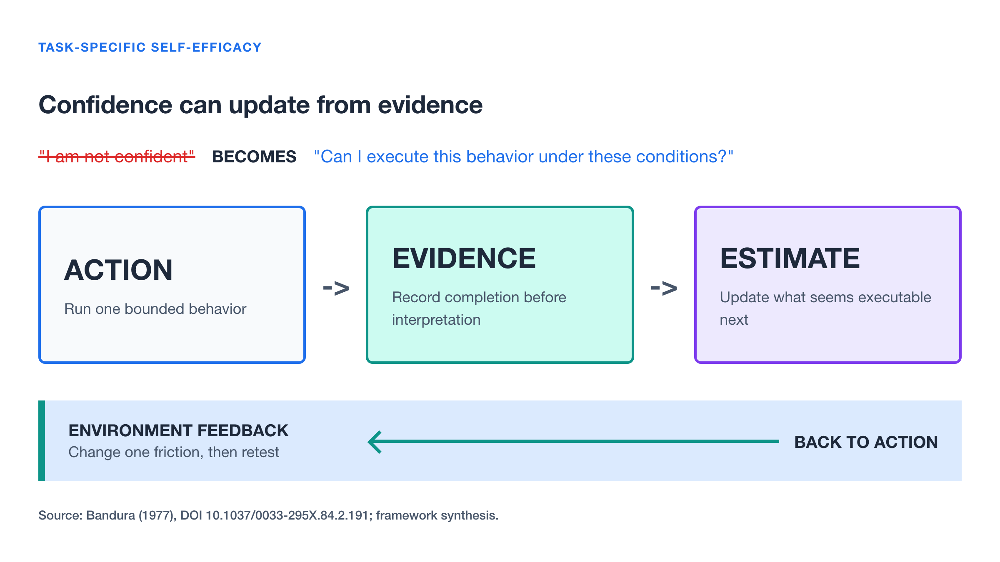
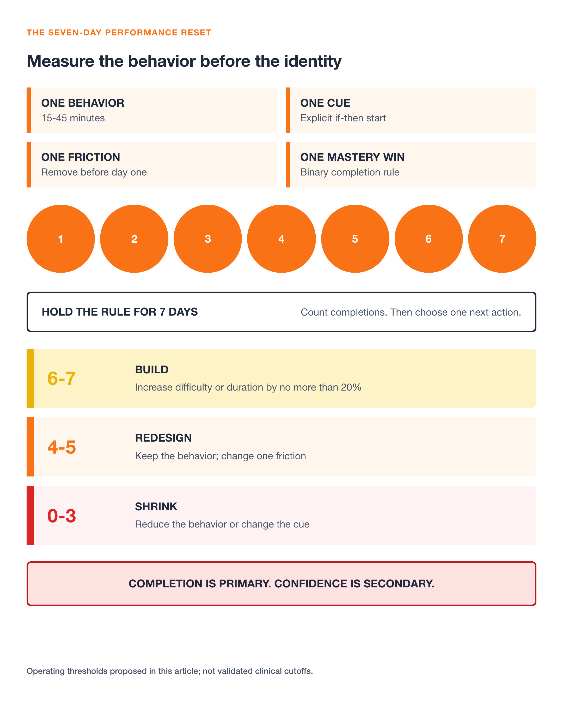
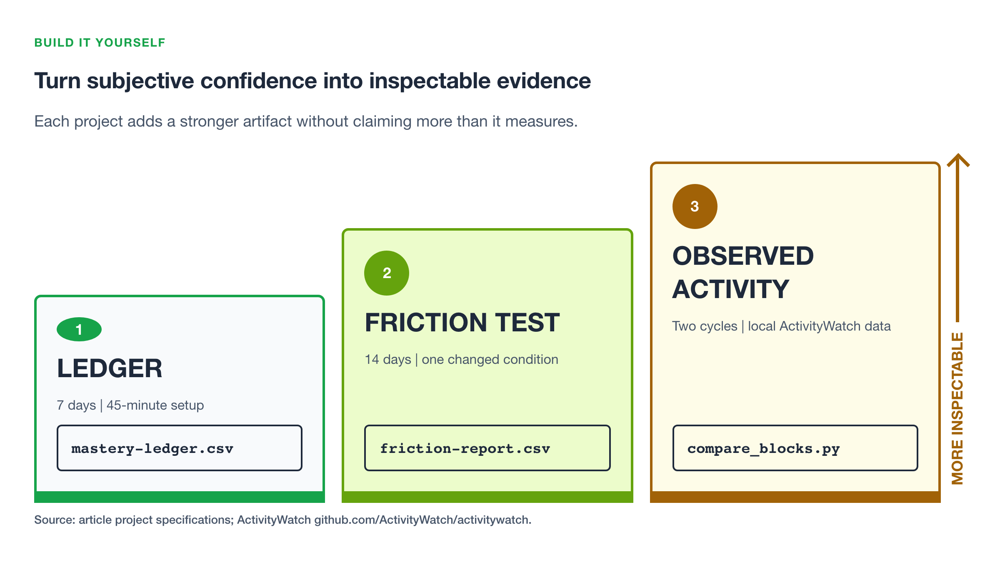

When performance slips, the instinct is often to make the recovery target bigger.
Work harder. Set a more ambitious goal. Find the old confidence. Erase the whole drawdown in one move.
That response feels serious. It can also make the next action harder to see.
In The Knowledge Project’s interview with performance psychologist Dr. Gio Valiante, a different pattern keeps surfacing. At 34:38, Valiante describes a portfolio manager trying to escape a drawdown. His first move is not to recover the entire loss. It is to reduce the risk and regain the habit of making a small amount. At 37:17, he generalizes the idea: find achievable small wins, acknowledge them, and begin stacking evidence again.
The useful lesson is narrower than “think positive.” Confidence is not the input you must manufacture before acting. For a specific task, it can be an estimate that updates after action.
This article turns that idea into a seven-day reset. You will choose one valuable behavior, remove one source of environmental friction, define one daily mastery win, and measure completion before deciding whether the larger goal needs to change.
Stop treating confidence as a personality
“I am not confident” sounds like a diagnosis of the whole person. It is usually too broad to be useful.
A better question is: How certain am I that I can perform this behavior under these conditions?
That is closer to self-efficacy. In his foundational 1977 paper, Albert Bandura defined efficacy expectations as beliefs about whether a person can execute the behavior needed to produce an outcome. The distinction matters. You can value yourself and still doubt your ability to deliver a difficult presentation tomorrow. You can also feel anxious and still have strong evidence that you can execute the opening two minutes.
Self-efficacy is not a magic performance dial. A meta-analysis of 114 studies reported a weighted average correlation of 0.38 between self-efficacy and work-related performance. That is meaningful, but it does not establish a one-way causal chain. Success can raise efficacy. Efficacy can influence effort and persistence. Skill, incentives, resources, health, and working conditions can affect both.
The practical move is to replace a global identity statement with a bounded estimate:
- Not “I have lost my confidence”
- Instead, “I completed 2 of my last 6 planned focus blocks, and I currently rate my ability to start tomorrow’s block at 4 out of 10”
The second statement gives you something to redesign and retest.

Audit the four evidence channels
At 41:14, Valiante maps confidence to four kinds of experience. The categories come from Bandura’s self-efficacy framework, although Valiante’s coaching interpretations should not be mistaken for controlled evidence that every intervention works equally.
Mastery experience
The strongest channel is direct experience: attempts you interpret as success or failure. The word interpret matters. Finishing 7 of 10 difficult trials could be evidence of growing competence or evidence of three failures, depending on the standard you selected before the work.
Do not lower the standard after seeing the result. Lower the scope before the attempt. Define a small behavior that is valuable, unambiguous, and within your control. Completing one 25-minute draft block is not the same as shipping a great article, but it is valid evidence about your ability to start and sustain a draft block.
Social persuasion
Feedback can alter what you believe is possible, especially when it is specific and credible. “You are brilliant” supplies little diagnostic value. “Your first two minutes stated the decision and evidence clearly” names a repeatable behavior.
Ask for evidence, not reassurance. One useful prompt is: “Which behavior should I repeat, and which single behavior should I change on the next attempt?”
Vicarious experience
Seeing another person succeed can expand or shrink your estimate of what is possible. The comparison is most informative when the person, constraints, and stage are relevant. Comparing your second attempt with an expert’s polished result confounds the evidence.
Replace aspirational comparison with process comparison. Observe someone one or two stages ahead, record the behavior they use, and test one part of it.
Physiological state
Pressure changes heart rate, muscle tension, breathing, and attention. Valiante argues at 43:34 that similar arousal can be interpreted as excitement or choking.
Treat that as a reappraisal prompt, not a universal explanation. Try naming the signal precisely: “My heart rate is elevated before the presentation.” Then test whether a neutral interpretation, “my body is preparing for effort,” changes the next behavior. Persistent or severe anxiety, burnout, depression, or trauma calls for qualified professional support, not a productivity scorecard.
The seven-day performance reset
The reset has three design decisions and four measurements. Keep the larger goal, but stop using it as the unit of daily judgment.
1. Choose one behavior
Select a behavior that takes 15 to 45 minutes and advances a real objective. It must have a binary completion rule.
Weak: “Make progress on the proposal.”
Testable: “At 9:00 a.m., open the proposal and write for 25 uninterrupted minutes before opening email.”
This is an if-then plan: when the 9:00 a.m. cue occurs, begin the defined action. A meta-analysis of 94 independent tests reported a medium-to-large aggregate effect on goal attainment, $d = 0.65$, for implementation intentions. The estimate spans different goals, populations, and study designs. It supports testing a specific cue-action link; it does not promise that this exact seven-day protocol will work for every reader.
2. Remove one source of friction
Do not make discipline carry a problem the environment keeps recreating. Change one condition before day one:
- Put the phone outside the room
- Close communication clients and disable notifications for the block
- Prepare the document, data, equipment, or clothing the evening before
- Move the behavior to a time and place where interruptions are less likely
- Ask one collaborator to protect the block for seven days
Some constraints cannot be solved personally. If workload, unsafe incentives, harassment, caregiving pressure, or chronic understaffing controls the outcome, name that constraint. A personal reset should reveal structural friction, not hide it.
3. Define the daily mastery win
The mastery win is completion of the behavior under the declared rule. It is not the final outcome, praise, revenue, a personal best, or an absence of anxiety.
Record four fields each day:
| Field | Scale | Purpose |
|---|---|---|
| Completed | 0 or 1 |
Primary behavioral evidence |
| Start delay | Minutes after planned cue | Sensitivity to friction |
| Pre-action efficacy | 0 to 10 |
Task-specific expectation before acting |
| Post-action note | One sentence | What helped, interfered, or changed |
Do not optimize all four numbers. Completion is the primary signal. The other fields help explain it.
4. Use a predeclared decision rule
After seven days, calculate the completion rate:
$$ \text{completion rate} = \frac{\text{completed days}}{7} \times 100\% $$
Use these thresholds for the experiment:
- At 6 or 7 completions, increase difficulty or duration by no more than 20 percent
- At 4 or 5 completions, keep the behavior and change one source of friction
- At 0 to 3 completions, shrink the behavior, change the cue, or question whether the environment permits the behavior
The thresholds are operating choices, not validated clinical cutoffs. Their job is to prevent one bad day from triggering an improvised verdict about identity.

A worked example with honest boundaries
Suppose a technical lead has delayed a difficult design note for three weeks. The outcome goal, “publish the architecture decision,” produces rumination but no reliable start.
The reset changes the unit of work:
| Element | Before | Seven-day design |
|---|---|---|
| Target | Publish the complete decision | Write for 25 minutes |
| Cue | When time appears | 8:30 a.m. after coffee |
| Friction | Email and chat open | Communication clients closed |
| Evidence | Whether the document is finished | Daily completion plus start delay |
| Decision | “I am failing” | Apply the 6-7, 4-5, or 0-3 rule |
If the lead completes five blocks, that is 125 minutes of work and a 71 percent completion rate. It is evidence about the ability to start under the redesigned conditions. It is not proof that the final architecture is correct, that confidence caused the work, or that the same design will transfer to a public presentation.
This example is illustrative, not a reported client case. The boundary is the point: measure the claim the experiment can actually support.
Common failure modes
The mastery win is trivial
A small win must still serve the objective. Opening the document is useful as a cue but too weak as the only seven-day target. Choose the smallest unit that produces meaningful practice or output.
The outcome remains the daily score
If you complete the planned behavior and still mark the day as a failure because the market moved, the audience disliked the talk, or the code contained a defect, you have mixed process evidence with outcome variance. Review outcome quality separately.
Tracking becomes another performance
The scorecard should take under two minutes. More fields can create the feeling of control while displacing the behavior itself.
Confidence rises faster than competence
More confidence is not always better. Keep an objective quality check: test results, error rate, review feedback, forecast calibration, or another measure appropriate to the work. The goal is evidence-calibrated confidence.
The environment is treated as an excuse
Context is neither destiny nor a loophole. Change one controllable condition and record one uncontrollable constraint. That separates adaptation from denial.
Build it yourself: three experiments

Project 1: Build a seven-day mastery ledger (Beginner)
Goal: Produce a versioned record showing whether one task-specific behavior was completed on at least four of seven days.
Prerequisites: A text editor, a Git repository, and one 15-to-45-minute behavior. No external template is required; start from an empty repository.
Steps:
- Create
mastery-ledger.csvwith columnsdate,planned_time,completed,start_delay_minutes,efficacy_before, andnote. - Write one if-then rule in
README.mdand define exactly what counts as complete. - Record the four daily measurements for seven days without changing the rule.
- Add a shell or Python check that verifies seven unique dates, only
0or1completion values, and an efficacy value from 0 through 10. - Calculate completions and apply the predeclared 6-7, 4-5, or 0-3 decision rule.
Success signal: python check_ledger.py mastery-ledger.csv exits 0 only when all
seven valid rows exist and prints the completion count and matching decision.
Time: 45 minutes to set up, plus two minutes per day.
Stretch goal: Add a second seven-day cycle that changes only one variable, either the cue, friction, or duration.
Project 2: Run a friction A/B experiment (Intermediate)
Goal: Test whether one environmental change reduces start delay without changing the target behavior.
Prerequisites: Project 1, 14 available workdays, Python with pandas or Polars, and a friction change you can apply consistently.
Steps:
- Keep the behavior, cue, and completion rule fixed for 14 days.
- Preassign seven control days and seven intervention days in
schedule.csv. - Apply one intervention, such as moving the phone outside the room, only on the assigned days.
- Record completion and start delay without adding other interventions.
- Generate
friction-report.csvwith count, completion rate, median start delay, and missing rows for each condition. - Treat the result as personal observational evidence, not a general causal claim.
Success signal: pytest exits 0 against fixtures with seven rows per condition,
and friction-report.csv contains both conditions with no missing start-delay
values.
Time: 90 minutes to build, plus the 14-day observation period.
Stretch goal: Randomize the condition order before the experiment and record one potential confound, such as sleep duration or meeting load, without changing the primary decision rule.
Project 3: Compare intention with observed computer activity (Advanced)
Goal: Compare planned focus blocks with locally recorded application activity to find environmental interruptions that self-report misses.
Prerequisites: Project 1, seven computer-based focus blocks, Python, and informed consent from anyone whose information could appear in window titles or URLs.
Steps:
- Install ActivityWatch, an MPL-2.0 licensed, cross-platform tracker that stores data locally.
- Configure only the watchers needed for active application and away-from-keyboard time. The window watcher normally records window titles, so exclude or filter titles where supported and review the privacy implications before collection.
- Export the seven-day data as JSON and keep the raw export local.
- Write a script that intersects each planned block with active-application events and reports application switches, away time, and unobserved intervals.
- Define one interruption category before reviewing the output, then change one environmental condition for the next cycle.
- Compare the second cycle with the first without labeling screen activity as concentration or psychological state.
Success signal: python compare_blocks.py schedule.csv activitywatch-export.json
produces one row per planned block, meets the project-defined acceptance threshold
of accounting for at least 95 percent of each block as observed or explicitly
unobserved time, and exits nonzero on overlapping or missing schedule intervals.
Time: Half a day to configure and analyze, plus two seven-day cycles.
Stretch goal: Build a local dashboard that displays planned minutes, observed minutes, switches, and away time while excluding raw window titles and URLs.
Use evidence to earn the next step
The most practical moment in the interview arrives before the discussion of elite performance. It is the decision to stop solving the entire future and identify the next executable step.
Run Project 1 for seven days. Change one behavior, one environmental condition, and one unit of evidence. At the end, do not ask whether you became a confident person. Ask whether the record changed your estimate of what you can execute next, under which conditions, and why.